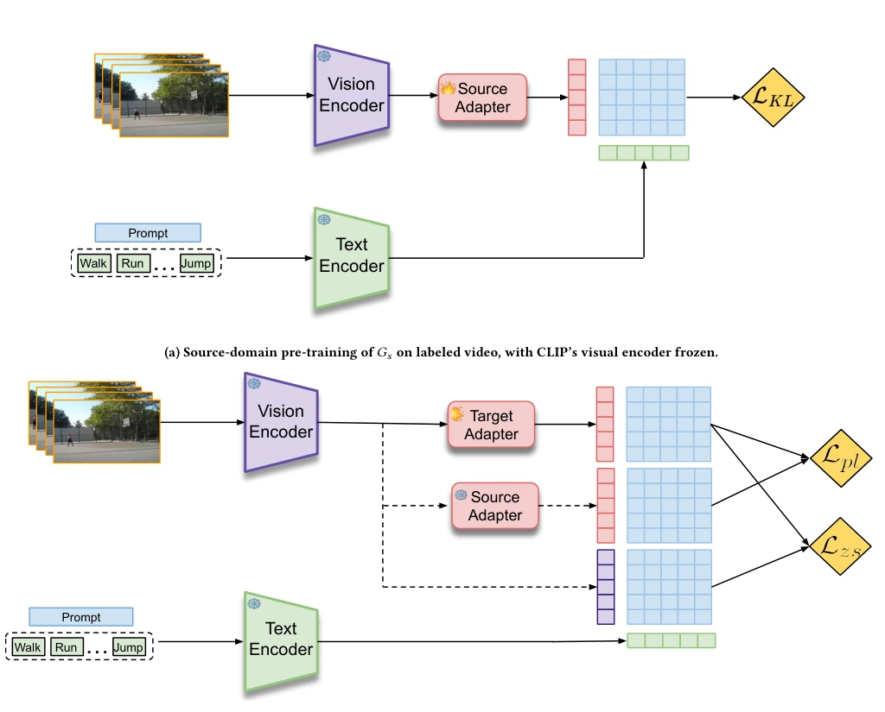
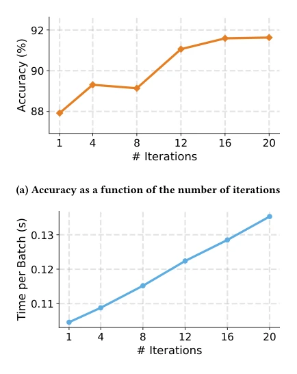
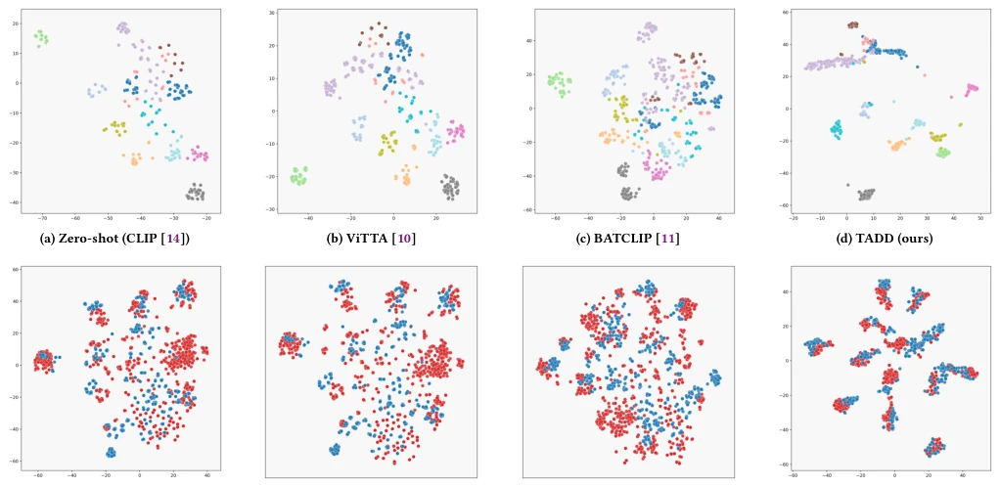

Video TTA is like dancing on quicksand; most existing methods indulge themselves on synthetic noise and explode on the spot when encountering real distribution shifts. This TADD paper attempts to use CLIP's frozen backbone as an anchor to implement a lightweight adapter for online updates. The dual distillation strategy sounds appealing: one aligns zero-shot, the other distills source domain knowledge, indeed stabilizing the process. But honestly, although freezing CLIP is safe, does it limit the mining of video temporal features? After all, video is not merely a stack of frames; simple frame averaging might lose key dynamics. However, beating BATCLIP and ST2ST on UCF-HMDB is still worth applauding; at least it doesn't directly forget like TENT does in video streams. For Embodied AI, such lightweight online adaptation might be more practical than full fine-tuning, but whether it can handle open-set unknown classes remains a question mark.
When deploying deep learning models in the real world, distribution shift is the norm, but video TTA is much harder than image TTA. Existing image TTA methods such as TENT [16] and SHOT [9] applied directly to video often lead to performance collapse due to temporal correlations. Video streams possess complex dynamics and inter-frame associations; simple entropy minimization strategies easily trigger catastrophic forgetting [2]. Worse still, existing video TTA works mostly evaluate synthetic noise (e.g., blur, illumination) rather than real cross-domain benchmarks [10]. When the target domain exhibits severe natural distribution shifts, models lacking strong prior guidance are prone to collapse. We require an online adaptation scheme that leverages VLM priors while preserving source domain discriminative knowledge, rather than relying on offline data or assuming simple data distributions. Particularly for robot perception, real-time adaptation to environmental changes is critical, and offline SFDA methods like ATCoN [20] cannot satisfy streaming data requirements.
The TADD framework is based on a frozen CLIP ViT-B/32 backbone, updating only a lightweight projection adapter. The process is divided into two stages: offline training of the source adapter $G_s$, and updating the target adapter $G_t$ during online testing. The core innovation is the dual distillation loss. First, zero-shot distillation ($L_{zs}$), forcing $G_t$ to align with CLIP zero-shot predictions, utilizing VLM's domain-agnostic semantics to prevent model collapse. Second, target distillation ($L_{pl}$), distilling discriminative knowledge from $G_s$ to $G_t$, retaining task-specific boundaries learned in the source domain. Combined, $G_t$ neither deviates from CLIP's general semantics nor loses the source domain's classification structure. The adapter adopts a two-layer MLP; only $G_t$ is updated during inference, with extremely low computational overhead. This design avoids full backbone fine-tuning, ensuring real-time online adaptation, while balancing generalization and specificity through a dual-anchor mechanism. Feature extraction is achieved through frame average pooling; although simple, it is effective, combined with dual losses to achieve robust adaptation.

Figure 1: Overview of TADD. (a) The source adapter 𝐺𝑠is trained on the source domain. (b) At test time, only the target adapter 𝐺𝑡is updated via Lzs and Lpl, and inference uses 𝐺𝑡with frozen text embeddings.
Tested on three benchmarks: UCF-HMDB, Daily-DA, and Sports-DA. The metric is Top-1 accuracy. TADD outperforms SOTA in closed-set TTA across the board, such as a +3.81% improvement on UCF-HMDB. It performs better compared to BATCLIP and ST2ST, especially under severe illumination shifts in Daily-DA. In partial set and multi-target adaptation experiments, TADD remains robust, proving that dual distillation effectively handles class mismatch and continuous domain shifts. Ablation studies show that using only zero-shot distillation loses source domain discriminative power, while using only target distillation makes it susceptible to noise; combining both is optimal. Batch size sensitivity tests indicate that TADD works even with single samples, and performance improves as batch size increases, being more stable than ViTTA. In terms of computational efficiency, TADD is faster than BATCLIP, although the parameter count is slightly higher, it avoids backbone gradient propagation.

Figure 2: Sensitivity to the per-batch adaptation iteration count on HMDB→UCF.

Figure 3: Visualization of features learned by each method on the HMDB51→UCF101 target stream (settings reflected in the file names). Subpanels (a)–(d) are class-colored t-SNE (zero-shot CLIP, ViTTA, BATCLIP, TADD, left to right); (e)–(h) are domain-colored t-SNE for the same methods in the same order.